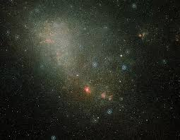

Guia das galaxias

Galaxia nuvem de Magalhães
Grande nuvem de Magalhães ( comulmente abreviada como LMC, do ingles Large Magallanie Cloud) é uma galaxia anã satelite que orbita em torno da vialactia
Fatos interessantes
- E rica em gases e poeria
- Foi batizada por Fernão de Magalhães
- A Grande Nuvem de Magalhães é uma das galaxias mais proximas da via lactia
Outras galaxias , Andromeda Olho negro